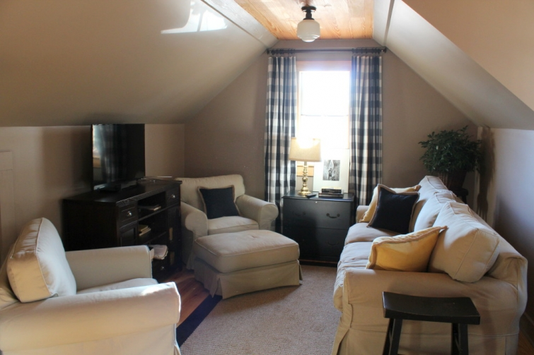
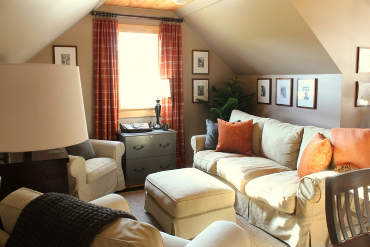

.png)
.PNG)
.PNG)
.PNG)
.PNG)
.PNG)
.JPG)
.JPG)
.PNG)
.PNG)


Let’s start today’s post with a little before-and-after.
Here’s the before:

and now the after:
Yes it was my husband’s upstairs office that has been my project the last few weeks. If you have been reading here this year you may remember we just finished this room late last winter/early spring. So why in the world did it need any changing? (Especially when engineers don’t really like change.)
Well…because of this:
A backpack? Yes…a backpack (and other camping gear.) A couple of months ago my husband spent a little over a week out West backpacking parts of Montana and Canada with our Seattle son. After he returned home he was putting up his backpacking things one night and decided to hang all that gear on random screws he put in a wall of the upstairs office.
Now at this point I need to let you know that my husband will be retiring this winter. When I originally decorated his office I was thinking he would be working out of that room as a consulting engineer with clients and such. So the space needed to have a professional feel to it.

But the closer his retirement has come and the more we have talked, he would really rather be building wooden canoes instead of doing engineering work. So with the change in use coming and the random camping gear on the wall, it seemed to me that the room needed a different direction – a more casual and rustic feel.
So I studied that gear hanging there on the wall. The big pieces of his camping gear are predominantly rust and gray in color. That became my starting point. Luckily, those colors were all over Target’s fall home line. I turned their rust plaid tablecloths into drapes for the windows (along with some Walmart sheets for lining them.)
I have been holding off and holding off on painting anything around here gray because I think it is a trend that will soon be gone (and I try my best to avoid trends.) But the other color in the gear was gray, so I had to use it – trendy or not. After looking at a zillion gray paint samples, I settled on Valspar’s Rugged Suede (a good name for a masculine space, right? 🙂 ) I painted the file cabinet above…
and all the kitchen cabinets and shelves that my husband built…
and the cabinet for the coffee bar…
and all the chairs around the big table…
and even the table that holds the tiny sink in the bathroom.
Then I finished the room by adding artwork from various camping and canoe trips my husband has taken over the years.
And what about the camping gear that started it all?
I rearranged it a little and added a framed photo of one of my husband’s canoe trips just to dress it up a bit. 🙂
And that is the new version of the room..more masculine and more rustic. I sent photos of it to our middle son off at law school, and he likes it much better. He had suggested this a year ago when we were planning the room and emailed back, “That’s what that room was supposed to look like.” 🙂
I hope your week is off to a wonderful start following a great weekend. Our weekend was filled with a fun celebration for someone special, and I’ll be sharing the details of it with you in the next post. As we approach Thanksgiving this week, I am sooo very thankful for a patient, talented, and hard working husband who helps me with all my crazy ideas! He is one in a million. 🙂
Until next time…


.PNG)
Your style is my style. Just discovered your site a few days ago and you have a new follower.
This is a stunning transformation. I am copying your idea with the tablecloth drapes! Thanks for the idea! Did you sew in pleats at the top, or are those just held in place with clips?
Hi Kelly!This is amazing! I was already amazed by the first version but this one is way better! You really have an incredible talent for decorating!
Wow Kelly! It looks fantastic. I love the color scheme and the simplicity of it all. Such a great use of the tablecloth. The black and white photos are the perfect touch for artwork too. I know your hubby must love it! Thanks for sharing it with us. Have a blessed Thanksgiving!
It’s a knockout for a spare room! Love the color, and I think of gray is good standard neutral color. Wish I had a husband only half as helpful & open to ideas and thinking out of the box. What great area you have put together. Love the small kitchenette & coffee bar…and a bathroom to boot. Wow! What wonderful useful spaces for when you have guests, and kids all coming home to visit….
Your room turned out gorgeous! I love the idea of using your husband’s camping gear as inspiration. And I hope the gray is not a passing trend as I love it. Now about those window coverings, what a brilliant idea! I have to pin that and then I may I may have to enlist a sister’s help as I am sewing challenged.
Are you using the table and chairs for Thanksgiving? Hope you and yours have a wonderful Thanksgiving.
I love the room! But, when I see my husband and son’s hunting/camping gear I don’t have visions of re-doing my spare room! Until now! I have the space and now I have the inspiration. Thanks 🙂
What a wonderful retreat Kelly! Your ideas are so inspiring and I look forward to each and every blog post. I had thought of hanging a tablecloth as a curtain but turned out it would look ridiculous. I need your assistance :). I guess it depends all on the hardware and the lining and the draping and well, just the room in general. You make it look so put together! Your husband is one lucky guy and your fortunate that he doesn’t mind doing the building of your awesome ideas. Don’t you just love pondering over paint chips!
Winter has arrived in our city and now it’s beginning to look like Christmas!
Looks great! Look forward to a curtain making tutorial before too long. It looks like you changed out your usual black photo frames for something different, or is that just the light?
You have so many photos throughout your house, and it seems that you change them out at times. Can you talk one day about how you store all your photos? I have boxes of photos all thrown in together, and then with the advent of digital photography, I find I don’t often go back to the camera or computer (not very technologically oriented)… when I run across one its a surprise!
Thanks for sharing.
———————————————————————
Linda, I am afraid I do not have a very good method of storing photos. Right now they are grouped roughly by year in various boxes (those that are printed.) For those that are on my computer they are in files by date. I need to do better – especially with those that are in the boxes. Perhaps 2016 will be the year for better photo organization!
Kelly
Wow, you have been very busy! I love the new color scheme. The grey and rust pair so well together. Love that your starting point was the backpack. 🙂 The curtains are so pretty. I think saw Jenny Cookies use the tablecloth for a luncheon on her blog. How nice that you will both be retired. I love that he is following his passion. Now, you need to do interior decorating on the side. 🙂 Hope you and your family have a wonderful Thanksgiving. Hope your sons are able to come home. 🙂
Wow, I love it! From the plaid cutain idea to the paint color!! You really know how to make your home look amazing!!! Like I’ve said before, you just inspire me to re-decorate our home. Thank you for sharing your home with us. I look forward to many more inspirations to bring into our home.
Absolutely perfect!
LO!!! And my family thinks I’m crazy. I read this post to my husband and he laughed, “because of the color of the backpack!”
I love it and you, sisters in crime! Have been wondering which room, is there one we don’t know about??? No, she’s redecorated the room she just finished. You made my day. Oh, my husband said, “I hope he doesn’t get a new backpack!” I did inform him it wasn’t just the color.
You have a great day, Cindy
PS, my son n law and daughter are Engineers, I helped my daughter rearrange their bedroom and I thought he was going to have a stroke. (She can make changes, she had to with me for a mother.)
just perfect… Everything is just perfect!!! Love your style and clean crisp decor!!! Happy Thanksgiving!!!
How lovely Kelly. The tablecloth curtains look sensational. The room is warm and inviting and really reflects your husband’s loves. I always think a home should reflect who you are, not the latest trends. You have once again achieved a timeless look, with a great budget, proving you do not need to be a millionaire to have a beautiful home. I always feel happy when I can achieve that warm feeling in my home, and even happier if I have managed it at a bargain price!
I saw your freshly painted cabinets on Pinterest and eagerly came over for more. 🙂
So clever to be inspired by the gear, and it came together so well! The gray is perfect as a supporting player to the rust- it doesn’t read as trendy, just warm and well-designed.
Wow! You certainly have been hard at work!!!! It looks great. I love it all… Especially the colors. Perfectly masculine. I love the photo decor. Perfect! Thanks for letting us view this wonderful space. You are so smart!
Sherry
You and your husband are a dynamic duo–have a terrific Thanksgiving.
Hi Kelly, The room looks FABULOUS! Great color scheme ! You are one talented and energetic gal! Absolutely love your practical and economical choices that also just happen to look WONDERFUL!!And you are right- you are so lucky to have such a talented and obliging husband. Though ,on the other hand, he is equally lucky to have you! Seems like the perfect match to me!
Kelly, that room looks so good and I love how you can whip up curtains from tablecloths and they look fabulous!
Wow…the room looks amazing! I also admire your energy to be able to do all of these house projects, while also entertaining and creating cute themes like you did for Halloween and then all of your blog posts. Do you ever rest?! I love the gray color. Very pretty!
Oh, I do love the rust and gray, Kelly. Perfectly masculine!
Perfect! Love the gray! And the colors you accented are just perfect, too! This was a wonderful way to thank him for the many ways he helps you with all your projects!! I really think if you ever wanted you could be a consultant in home decorating and your husband could design and build things!! Maybe some day we will see you in one of the fix up TV shows!!:) Almost ready for Thanksgiving– going to make my first pumpkin roll! Wish me luck!;) Have a very blessed holiday and enjoy your wonderful family.
You dear Kelly are amazing!!! The tablecloth curtains… Love!!! Does your brain ever rest? Happy happy Thanksgiving!!
It’s the perfect masculine room! LOVE it! I love the colors and how you accessorized everything.
Shelley
Plaid tablecloths for curtains…..Love it! I did that when we were first married. I used yellow plaid sheets for sewn curtains to match a plaid comforter in our guest room. Those were the days…80’s, Ha….. I did so much sewing then! You are making me realize I need to get back to that. Don’t you just love all the plaid invasion at Target? Kind of fun. 🙂 I think the gray works wonderful with the neutral walls. It’s nice that the hubs got a redo after he helped with your son’s apartment. You are a decorating diva with a touch of frugality! Good job Kelly! Congrats to your husband’s impending retirement. P. S. Will there be a road trip out west for a visit to decorate your other son’s apartment, now that he will soon be retired? 🙂
This looks beautiful!
Oh Kelly, this is pure genius! I love how you incorporated the camping gear. I have a friend who builds wood boats in Pensacola and they are so intricate and beautiful. Wonderful days ahead for you both!
Yes, I agree your husband sounds like one in a million! You’re well matched 🙂
His carpentry skills seem fantastic … I hope he’s able to follow his dream and build canoes. What you’ve both achieved with this room is just amazing …..it looks fantastic and has so much character … especially for a new room. I haven’t ventured far into greys yet apart from a shower room but I do like grey and natural wood together and can see how well it works here as well.
Love the hiking and camping gear displayed on the wall ….I imagine they had a wonderful time in Canada and Montana ….sounds exciting!
Glad to hear your weekend went well …looking forward to reading about it!
Rosemary
Fabulous as always. I love the fact that you are able to make a change and have it not ruin your day. I get something in my head, search high and low for it, and because I can’t find what I want, I do nothing!! I’ve made curtains from sheets before, so love the way these look. I just did a rod pocket but yours always look professionally done and I like them much better. Kelly, do you do the painting or your husband? I would love to paint some furniture but am thinking the prep takes time and lots of smelly substances. Do you just do a prime and paint or go through paint removal, sanding, etc.? Always, always love your posts, Kelly. You are such an inspiration. And, your house is always so clean and neat!! Have a lovely Happy Thanksgiving.
————————————————————————-
Hi Julie!
I do the painting, but I don’t normally have prep work to do. I just painted right over the paint that was already on the cabinets and chairs in that room. I sprayed the chairs outside with a paint that was labeled as “primer plus paint all in one.” Spray painting is so much faster, but the clean up is a royal pain. It does take a while to clean that sprayer. If sanding or scraping is required, my husband will normally do that part of the project.
Kelly
Love the kitchen cabinets and the choice of colors throughout are beautiful! Great job!
You hit the mark with the colors. It doesn’t look trendy, but like it was meant to be. You amaze me with your drapes. I need lessons…perhaps a tutorial one day!
That room looks great…love how it coordinates with all of your hubby’s camping gear! That was a brilliant idea! 😉
Do you sleep? I can’t imagine redecorating so soon! Your bonus room does look awesome! I love the gray. I think I told you my daughter just bought a 1920s house. I have been helping her paint and she chose useful gray by Sherwin Williams (Katrina’s suggestion) for the kitchen. I am loving it! We have a bonus room similar to yours and there is a pool table where your table and chairs are. How did you avoid a pool table? (I would much rather have the table and chairs.) I am excited to hear about the celebration.
Beautiful ! Is there any room in your home that doesn’t belong in “House Beautiful” or on HGTV ! Your home is lovely – and you are very talented…..
Kelly,
You always do such wonderful work….and that room certainly did involve work to do all that painting! Looks wonderfu! How fun to incorporate his hiking gear in the room! Hope you have a Happy Thanksgiving. Warmly, Gracia
The room looks great! Just picked up my copy of BH&G Christmas Ideas and your house decorated for Christmas is absolutely amazing. I love it. I was wondering if you would ever consider sharing your interior floor plan with us. I read that you used the SL Lakeside Cottage for the exterior but I know others would love to see how all your rooms work together with a floor plan. Thanks for all your hard work keeping this blog going. I really get inspired and I enjoy it throughly.
You are quite the gal! Everything about this is perfect! You inspire me to finish a flyfishing rogues gallery I started a long time ago. It was supposed to be for Father’s Day a couple years ago:( BTW…all your posts are fun. All!